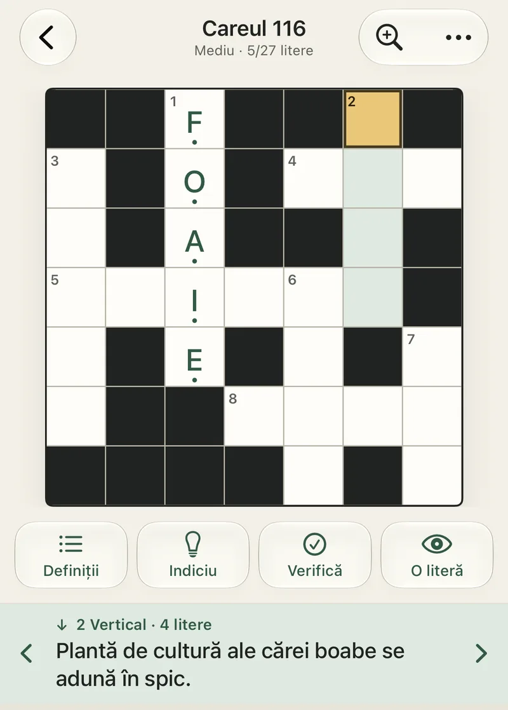
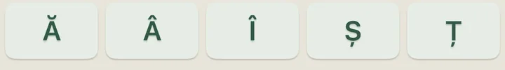
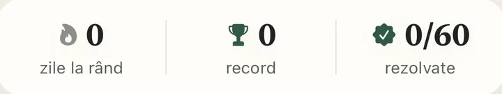
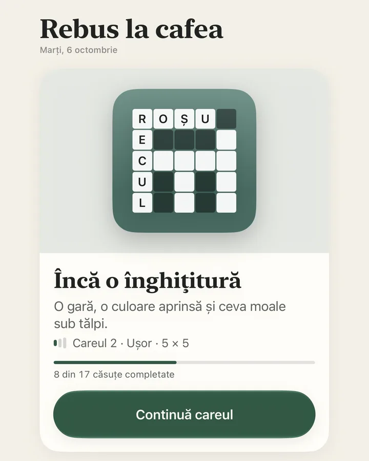
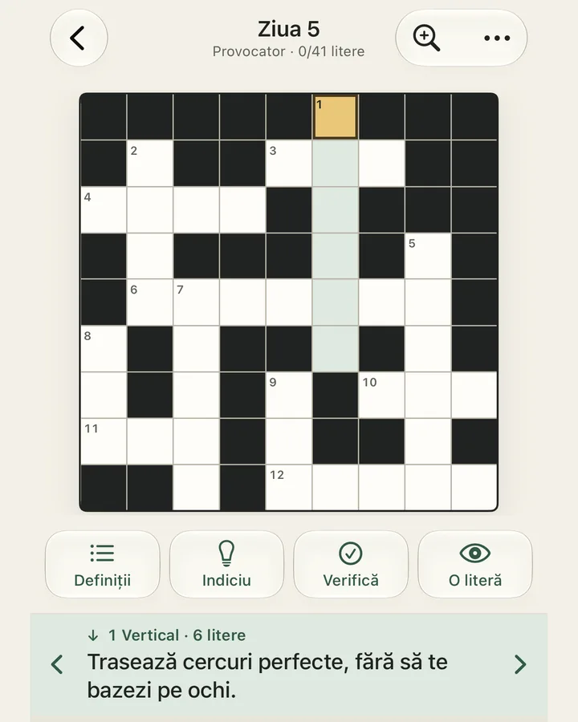
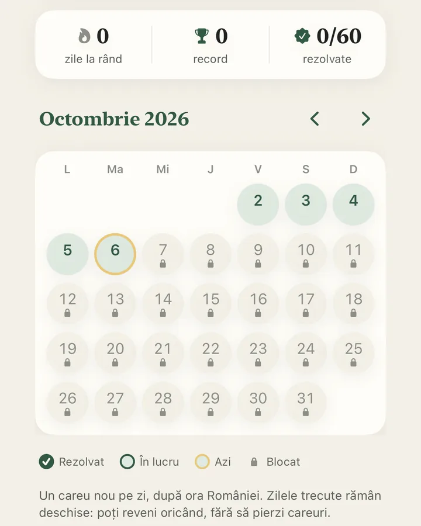

Gratuit
- 100 de careuri principale
- 60 de provocări în „Careul zilei”
- Toate ajutoarele
- Sincronizare iCloud
- Fără reclame, pentru totdeauna
Careuri românești pentru iPhone
Careuri scrise în română, cu diacritice adevărate, indicii care te pun pe gânduri și o provocare nouă în fiecare zi. Fără reclame, fără cont, fără grabă.



100 careuri gratuite
60 de provocări zilnice
Promisiunea noastră
Rebus la cafea nu are reclame și nu va avea. Fără bannere peste careu, fără clipuri de 30 de secunde ca să primești un indiciu, fără ferestre care apar între careuri.
Aplicația se susține din Premium, plătit o singură dată, nu din atenția ta. Pauza de cafea rămâne a ta.
Capturi de pe iPhone. Totul în română, de la definiții la tastatură.



Un joc liniștit, gândit de la început pentru limba română.
Ă, Â, Î, Ș și Ț stau deasupra tastaturii, la îndemână. În careu sunt litere distincte, exact cum trebuie.
O serie de 60 de provocări gratuite, câte una pe zi. Ai ratat o zi? O găsești în arhivă.
„Verifică”, „O literă” și „Indiciu” sunt gratuite. După ce rezolvi cuvântul, poți citi explicația.
Merge și fără internet. Progresul se salvează pe dispozitiv, automat, cât timp scrii.
Sincronizarea prin iCloud e inclusă gratuit, pe dispozitivele care folosesc același cont.
Fără reclame, cronometru sau penalizări. Fără cont nou și fără urmărire.
Întrebări despre careuri, achiziții sau progres? Aici găsești răspunsurile și o adresă la care poți scrie.
Pentru o problemă tehnică, descrie ce s-a întâmplat și include versiunea aplicației și versiunea iOS. Dacă atașezi o captură, verifică să conțină doar informațiile pe care vrei să le trimiți.
Premium include 30 de careuri disponibile acum. Pachetele tematice noi, adăugate periodic prin actualizările aplicației, sunt incluse fără cost suplimentar. Plătești o singură dată în App Store, fără abonament. Toate pachetele noi sunt incluse în aceeași achiziție și rămân în arhiva premium, accesibilă cumpărătorilor. Cele 100 de careuri gratuite rămân disponibile. Prețul furnizat de Apple este afișat în aplicație, înainte de confirmarea cumpărării.
Nu. Rebus la cafea nu are reclame și nu va avea, nici în careurile gratuite, nici în Premium. Nu există bannere, clipuri pentru indicii sau ferestre între careuri. Aplicația se susține din achiziția unică Premium.
În Setări, apasă „Restaurează achizițiile”, folosind același cont App Store cu care ai cumpărat Premium. Restaurarea necesită o conexiune la internet. Dacă accesul nu apare, verifică acel cont și încearcă din nou. Apple explică și pașii de restaurare.
Progresul se păstrează local pe dispozitiv, inclusiv offline. Scrierea se face după o scurtă pauză la tastare și când părăsești careul sau treci aplicația în fundal. Dacă apare un mesaj că salvarea nu a reușit, verifică spațiul liber și reîncearcă înainte să închizi aplicația. Sincronizarea iCloud se încearcă separat și depinde de conexiune, cont și condițiile sistemului.
Da, prin iCloud, pe dispozitivele care folosesc același cont. Sincronizarea progresului este activată implicit și este disponibilă atât pentru gratuit, cât și pentru Premium. O poți opri din Setări sau poți cere o încercare prin „Sincronizează acum”. Actualizarea nu este garantată imediat. Se sincronizează progresul, selecția din fiecare careu și istoricul rezolvărilor; tema, vibrațiile și alegerea careului afișat rămân locale. „Restaurează achizițiile” recuperează separat accesul Premium prin contul App Store.
Aplicația păstrează o salvare întreagă după reguli stabile. O finalizare are prioritate, cu excepția unei reluări sau resetări explicite. Literele din salvări diferite nu se combină. Așteaptă reușita sincronizării înainte să continui pe celălalt dispozitiv.
Sincronizarea se suspendă până când confirmi folosirea noului cont. Confirmarea permite trimiterea progresului local către acel cont. Transferul nu se face automat.
În Setări, „Resetează tot progresul” golește imediat literele și statisticile locale. Resetarea se aplică celorlalte dispozitive după sincronizare, inclusiv după reactivarea ei. Cu sincronizarea oprită, copia iCloud nu se modifică imediat. Oprirea sincronizării sau ștergerea aplicației nu șterge copia iCloud existentă. Confirmarea resetării este necesară, iar achizițiile sunt păstrate.
Folosește rândul Ă, Â, Î, Ș și Ț de deasupra tastaturii iPhone-ului. Acestea sunt litere distincte în careuri: A nu înlocuiește Ă sau Â, iar I nu înlocuiește Î. O literă ocupă o singură căsuță.
Da. „Verifică” marchează literele greșite, iar „O literă” completează o căsuță. „Indiciu” oferă o direcție de gândire fără să completeze litere; după rezolvarea cuvântului poți citi explicația. Ajutoarele sunt disponibile gratuit în colecțiile gratuite și în cele deblocate prin cumpărare.
Este o serie de 60 de provocări gratuite, separate de cele 130 de careuri principale (100 gratuite și 30 Premium). Seria începe din ziua în care deschizi prima dată aplicația și se deschide câte o provocare pe zi, după ora României. Zilele trecute rămân accesibile în arhivă, iar cele viitoare sunt blocate. După ziua 60, toate provocările rămân în arhivă, pentru a reveni oricând.